This article is about the characters in the The Nexus..
The following is a complete pictorial list of the characters in
The Nexus Series.
;
Key
Alive
Dead
Unknown
A character with an "Unknown" status was alive when last seen, but was injured, lost, or unsecured since.
奥特曼
人类形态
早田 进
星 凉子
东 光太郎
Judith
Jeffrey
奥特曼
泰罗奥特曼
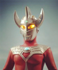
雷欧奥特曼
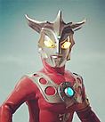
佐菲奥特曼
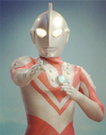
奥特之父
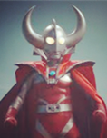
葛雷奥特曼
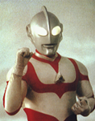
GUYS JAPAN
管理层
迫水 真吾
美崎 雪
久世 哲平
宇都宫 重纲
佐藤 三斗
泉 出云
鸟山辅佐官
丸
特别作战小组（Special Attack Force）
相原 龙
春崎 彼方
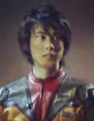
浅沼 敏行
斑鸠 贞治
风间 真理奈
GUYS Crew
井上 真一
江户川 临
星川 正彦
森冈 正博
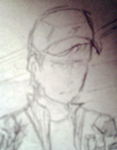
池原 诗织
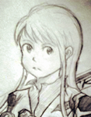
三城 望
矢野 次平
预备队
横山 雄一郎
难波 圭一
尾田 吉
市川 韶光
浅草 萤
松山 枫
人造怪兽
火焰乌英达姆
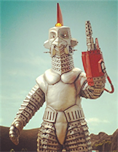
普利茨冰人
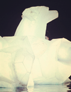
考斯莫里基德
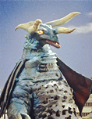
贝隆
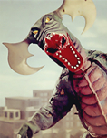
艾莉
罗贝拉格
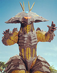
宇宙人&怪兽
宇宙佣兵
祖鲁克人
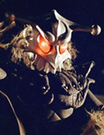
泽朗人
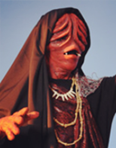
布莱克人
法伊亚人
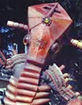
巴姆人
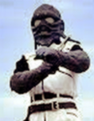
普鲁玛
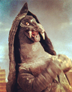
萨伊科阿博索巴
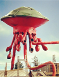
法伊蒙斯
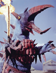
梅伽基拉斯
Greene Farm
Greene Family
Maggie
Hershel
Billy
Rachel
Susie
Lacey
Arnold
Shawn